Empresa familiar em São Paulo desde 1972
Marmoraria tradicional perto de você
Há mais de 50 anos, transformamos mármores, granitos e pedras nobres em peças exclusivas. Unimos tradição, sofisticação e acabamentos impecáveis para criar ambientes elegantes, personalizados e atemporais.
- Desde 1972no mercado de marmoraria
- Sob medidada fabricação à instalação
- Nacionais e importadaspedras para cada projeto
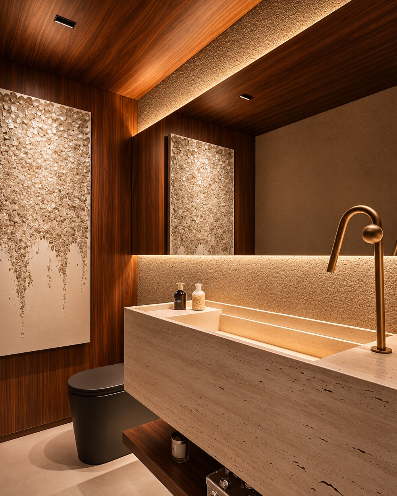
A pedra certa valoriza cada ambiente da casa
Cozinhas, banheiros, áreas gourmet, lavanderias e escadas. Projetos reais executados pela nossa equipe, do residencial ao comercial.
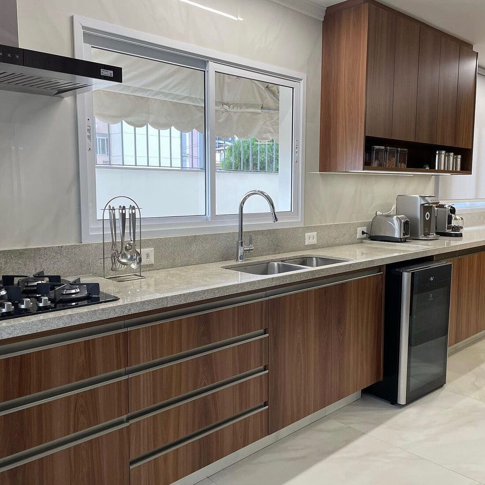
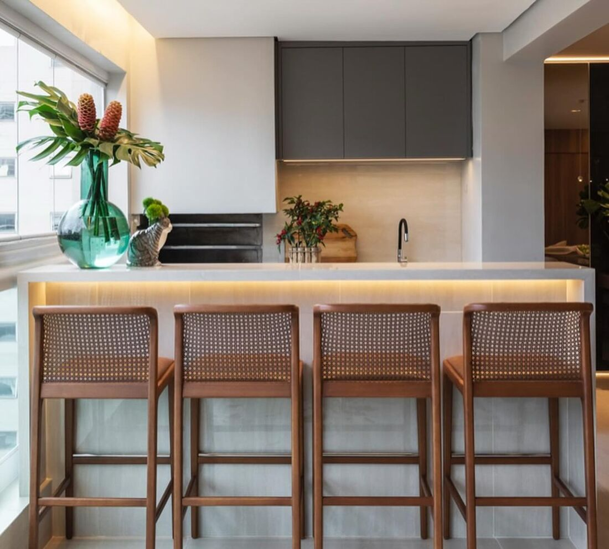
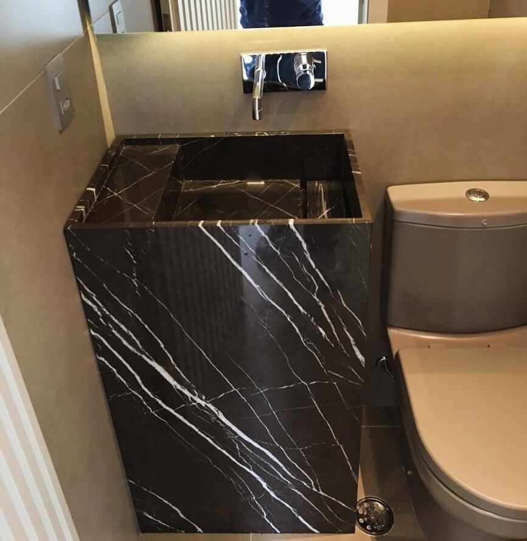
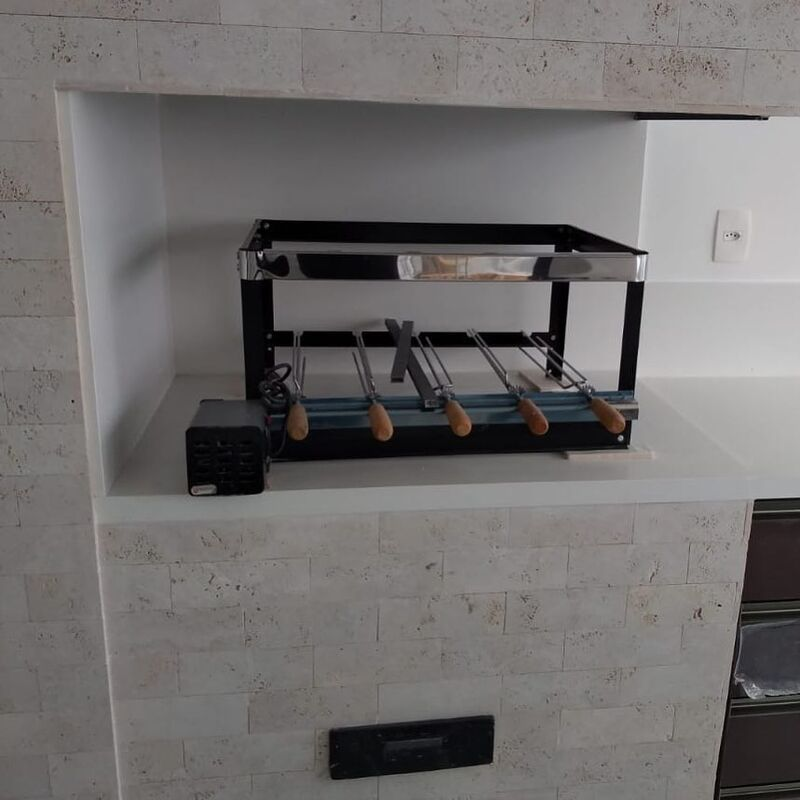
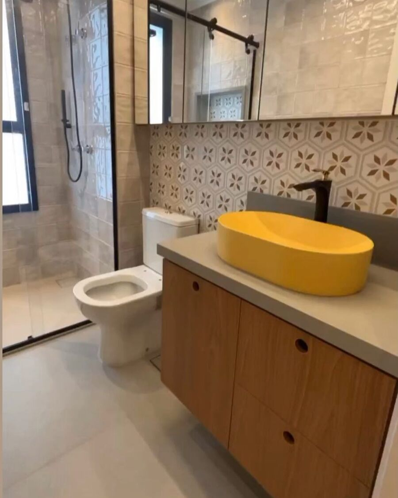
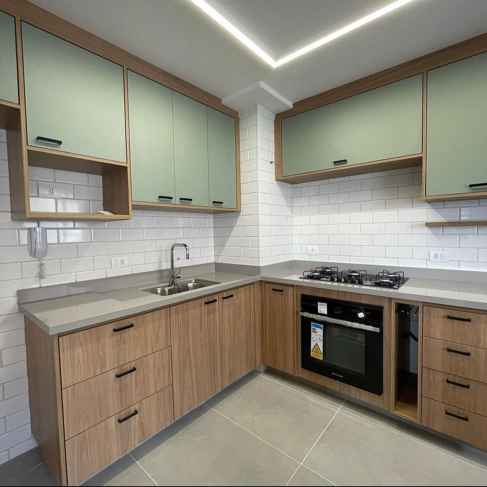
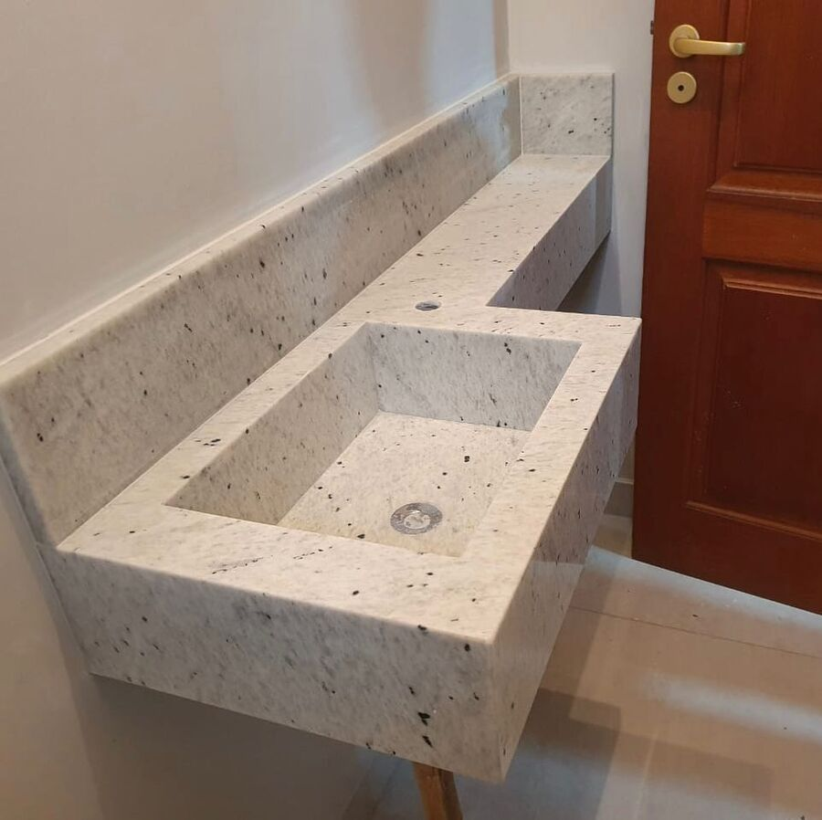
E também
Escadas, soleiras e peitoris, bancadas de lavanderia, tanques esculpidos, nichos de banheiro, tampos de mesa, painéis, lareiras e revestimentos em pedra.
Do primeiro atendimento à peça instalada
Contratar uma marmoraria precisa ser um processo de confiança. Acompanhamos cada etapa do seu projeto.
-
Atendimento consultivo
Entendemos o ambiente, o uso no dia a dia, o estilo e o investimento previsto para o projeto.
-
Escolha do material
Orientamos sobre aparência, resistência, manutenção e aplicação de cada pedra para você decidir com segurança.
-
Fabricação sob medida
Beneficiamento e acabamento das peças respeitando as medidas e especificações do projeto.
-
Instalação
Instalação com mão de obra especializada e atenção aos detalhes que fazem diferença no resultado final.
Pedras naturais e industrializadas, nacionais e importadas
Cada material tem características próprias de resistência, aparência e manutenção. Ajudamos você a escolher considerando estética, funcionalidade e custo-benefício.
- MármoresNacionais e importados, para lavatórios, cubas esculpidas, painéis e peças decorativas.
- GranitosNacionais e importados, para bancadas, pias, escadas, soleiras e peitoris.
- QuartzitosQuartzitos naturais para cozinhas, ilhas e áreas gourmet.
- Superfícies industrializadasAlternativas para quem busca uniformidade e praticidade no uso diário.
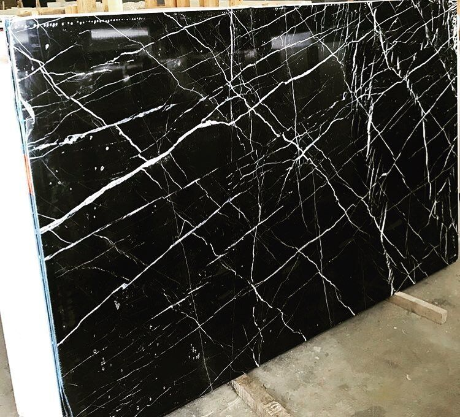
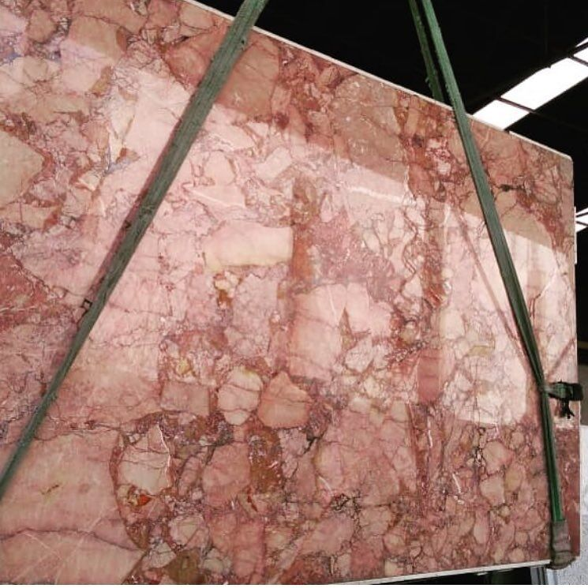
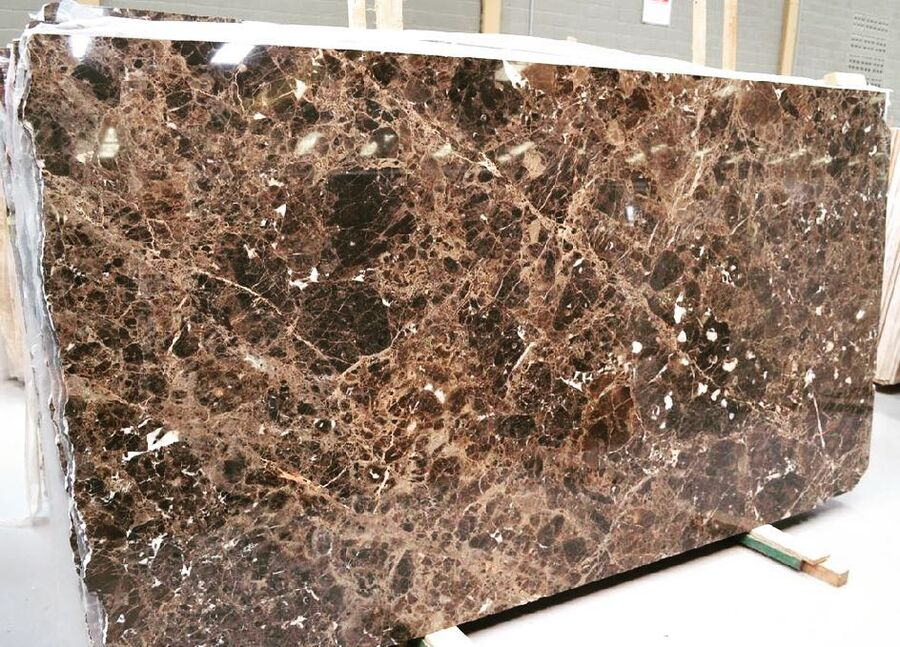
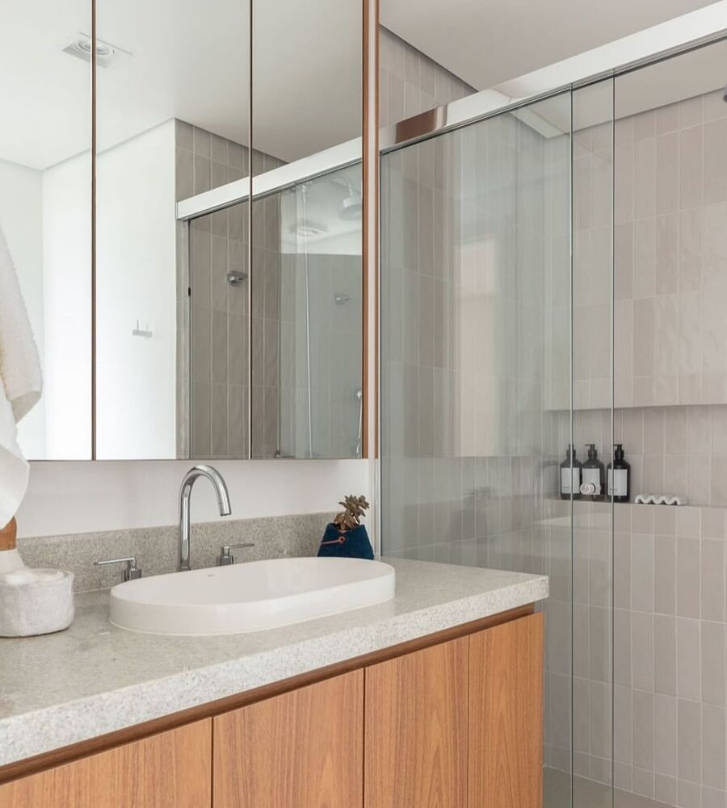
Mais do que fornecer pedras, entregamos confiança, atendimento próximo e acabamentos que valorizam cada ambiente.
A experiência de uma empresa tradicional com atendimento próximo
Tradição e credibilidade
Atuação no mercado de marmoraria desde 1972.
Mão de obra especializada
Profissionais com conhecimento técnico para projetos personalizados e diferentes tipos de acabamento.
Atendimento consultivo
Entendemos suas necessidades e orientamos na escolha dos materiais mais adequados.
Projetos sob medida
Soluções que respeitam as especificações, medidas e características de cada ambiente.
Variedade de materiais
Pedras naturais nacionais e importadas, além de superfícies industrializadas.
Qualidade nos acabamentos
Cuidado nos detalhes de fabricação, acabamento e instalação.
Soluções para cada investimento
Alternativas com excelente relação entre qualidade, estética e custo-benefício.
Acompanhamento de perto
Atenção durante todo o processo, do orçamento à instalação final.
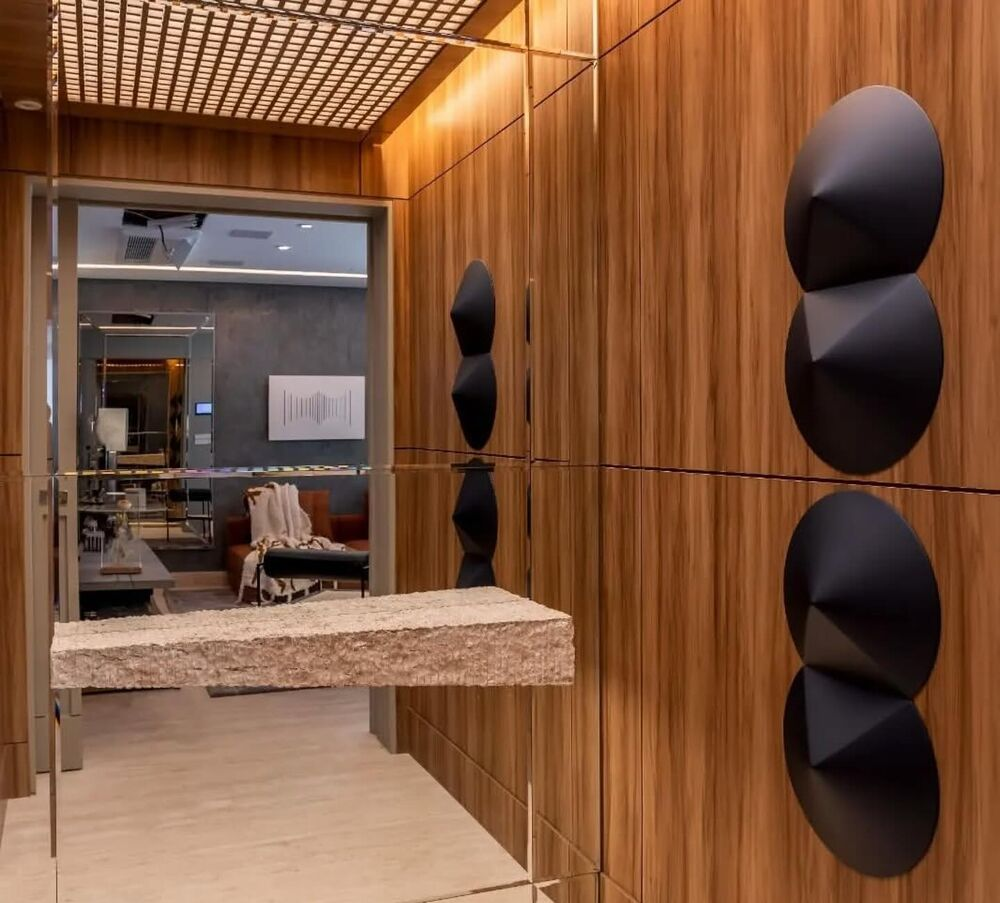
Para arquitetos, designers e construtoras
Uma marmoraria especializada para executar o seu projeto com fidelidade às especificações.
- Atendimento a arquitetos, designers de interiores, engenheiros e construtoras
- Projetos residenciais e comerciais
- Orientação técnica sobre características, aplicações e cuidados de cada pedra
- Fabricação e instalação com mão de obra especializada
Conte sobre a sua obra e receba um orçamento personalizado
O valor depende do material, das medidas e do acabamento. Quanto mais detalhes você enviar, mais preciso fica o orçamento.
- Atendimento
- Segunda a sexta, das 8h às 17h30
Sábado, das 8h às 12h - (11) 99825-2857
- Pagamento
- Desconto para pagamento à vista e parcelamento no cartão, conforme as condições comerciais vigentes.
Dúvidas frequentes
Não encontrou o que procurava? Fale com a nossa equipe pelo WhatsApp.
Tirar dúvida no WhatsAppQual o valor do metro quadrado?
O valor varia conforme o material escolhido, as medidas, o tipo de acabamento e as características do projeto. Trabalhamos com orçamentos personalizados para oferecer a melhor solução em cada situação.
Qual a diferença entre mármore, granito, quartzito e superfícies industrializadas?
Cada material possui características próprias de resistência, aparência, manutenção e aplicação. Orientamos o cliente na escolha mais adequada para cada ambiente, considerando estética, funcionalidade e custo-benefício.
Qual é o melhor material para bancada de cozinha?
Depende do estilo desejado, da frequência de uso e do investimento disponível. Avaliamos as necessidades do cliente e indicamos materiais adequados para o uso diário.
Vocês fazem projetos sob medida?
Sim. Trabalhamos com peças personalizadas, respeitando as medidas, especificações e necessidades de cada projeto.
Vocês realizam a instalação?
Sim. Oferecemos fabricação e instalação com mão de obra especializada.
Qual é o prazo de entrega?
O prazo depende do material, da complexidade do projeto e da programação de produção e instalação. Informamos a previsão durante a negociação.
Vocês atendem arquitetos e designers de interiores?
Sim. Atendemos profissionais que buscam uma marmoraria especializada para executar seus projetos.
É possível escolher um material bonito com um orçamento mais acessível?
Sim. Trabalhamos com diferentes opções de materiais e buscamos alternativas que conciliem estética, qualidade e investimento.
Vocês trabalham com pedras nacionais e importadas?
Sim. Oferecemos opções de pedras nacionais e importadas, conforme a disponibilidade e as necessidades do projeto.
Quais são as formas de pagamento?
Oferecemos condições de pagamento diferenciadas, incluindo desconto para pagamento à vista e parcelamento no cartão, conforme as condições comerciais vigentes.